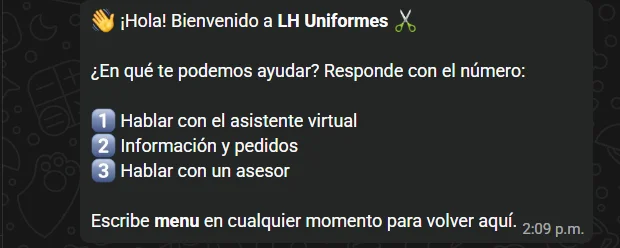
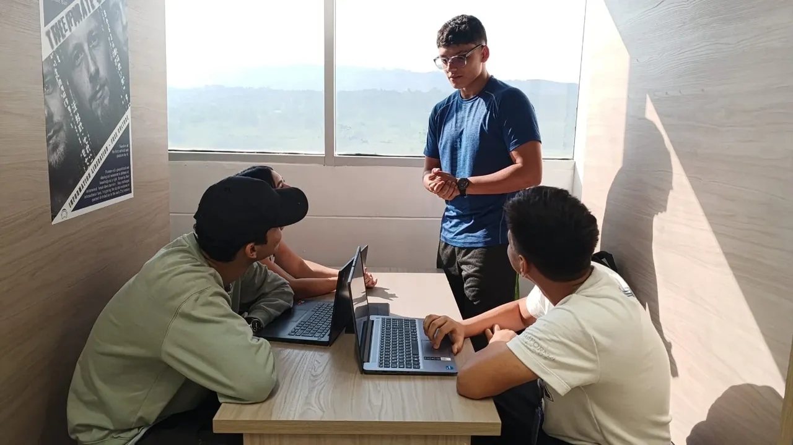
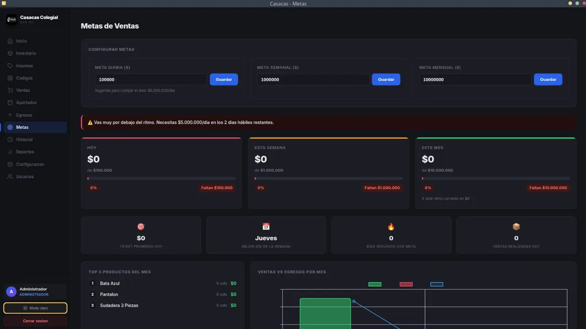
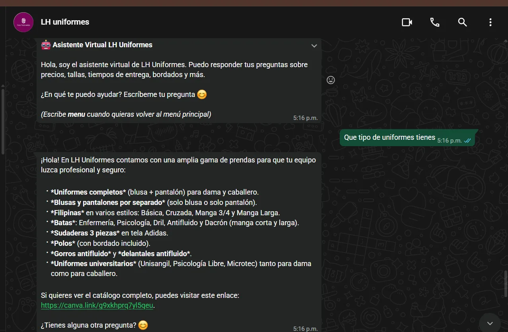
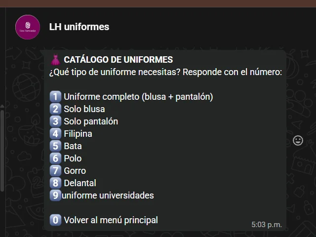

Achinti Morales
Ticket de resumen
- Sistemas en producción
- 2
- Tests en Ronda
- 637
- Nodos en el chatbot
- 86
- Modalidad
- Remoto
EstadoDisponible
Desarrollador full stack junior en San Gil, Colombia
Hago software que negocios reales usan todos los días: puntos de venta, chatbots de WhatsApp con IA y aplicaciones web.
Achinti Morales
Ticket de resumen
EstadoDisponible

Disponible para trabajo remoto
Soy Achinti, desarrollador de software de San Gil, Santander. Empecé a programar en el bachillerato técnico en sistemas y desde entonces no he parado.
Casi todo lo he aprendido por mi cuenta: cuando algo no lo sé, lo leo, lo pruebo y lo rompo hasta entenderlo. Así pasé de mis primeras páginas a bases de datos, automatizaciones e inteligencia artificial.
De programar me gusta que mezcla dos cosas: la lógica para entender bien un problema y la creatividad para encontrar la forma más sencilla de resolverlo.
Para mí un programa vale cuando le facilita el trabajo a alguien, por eso me importa hablar con la persona que lo va a usar antes de escribir la primera línea.
Ahora estudio Desarrollo Web e IA en Campuslands, sigo construyendo proyectos propios y quiero crecer en un equipo donde aprenda de gente con más experiencia que yo.
Español nativo, inglés A2

Lo que puedo hacer por tu negocio o tu equipo. Cada servicio ya lo hice para alguien, y abajo está la prueba.
Ventas, caja por turno, inventario, tickets en impresora térmica y reportes en Excel. En el computador del mostrador o en la nube para varios locales.
Lo hice en Casacas Colegial y Ronda.
Un asistente que responde preguntas en lenguaje natural, muestra el catálogo, toma pedidos, los guarda en Google Sheets y pasa la conversación a una persona cuando hace falta.
Lo hice para LH Uniformes.
Lo subo a un servidor propio con Docker y HTTPS, preparo respaldos y me quedo pendiente de que siga funcionando después de la entrega.
El chatbot de LH Uniformes corre así en DigitalOcean.
Dos sistemas que clientes usan a diario, el producto que estoy terminando y tres proyectos donde exploré 3D, IA y visión artificial.
POS en la nube para restaurantes, bares y cafeterías
En desarrollo, código privado
Un restaurante necesita tomar el pedido en la mesa, que la cocina lo vea en el momento y cuadrar la caja al cierre, sin que sus datos se crucen con los de otro negocio. Ronda lo resuelve en un solo sistema con varios restaurantes aislados entre sí.
NestJS, React 19, TypeScript, PostgreSQL, Prisma, Redis, Socket.io, Docker
El repositorio es privado. Si quieres revisar el código, escríbeme y te doy acceso.
Punto de venta e inventario para un almacén de uniformes
Cliente real, en producción
El negocio llevaba ventas, inventario y caja por separado. Ahora usa a diario una app de escritorio que reúne todo e imprime el ticket en la impresora térmica del mostrador.
Electron, Node.js, better-sqlite3, ESC/POS, XLSX, Chart.js, JsBarcode
Ver código de Casacas Colegial en GitHub (se abre en una pestaña nueva)
Atención y pedidos por WhatsApp con IA
Cliente real, en producción
La atención y la toma de pedidos se hacían a mano, mensaje por mensaje. El bot responde, muestra el catálogo, registra el pedido y pasa la conversación a una persona cuando hace falta.
n8n, Node.js, Baileys, Groq API, Google Sheets, Docker, DigitalOcean, Caddy
Ver workflow del chatbot de WhatsApp en GitHub (se abre en una pestaña nueva)

WhatsApp Trigger
If¿Mensaje válido?
CodeLee el estado
SwitchMenú principal
AI AgentGroq
Catálogo9 opciones
Google SheetsPedidos
AsesorUna persona
Menú digital con platos en 3D y realidad aumentada
En desarrollo
En una carta tradicional no se ve el plato antes de pedirlo. Esta plataforma para varios restaurantes se abre con un QR, sin instalar nada: cada plato tiene fotos, ingredientes, un modelo 3D que se puede girar y la opción «Ver en mi mesa» con realidad aumentada. Incluye un panel de administración con JWT y roles.
React 19, TypeScript, Vite, Three.js, WebXR, Express, Prisma, PostgreSQL, JWT, Docker
Ver código de Menú 3D en GitHub (se abre en una pestaña nueva)Talleres de educación inclusiva generados con IA
Proyecto académico
Preparar actividades para estudiantes con discapacidad le quita mucho tiempo a un docente. Aquí elige el perfil del estudiante, la materia, el tema, el nivel y la cantidad de actividades, y la IA arma un taller adaptado y con formato. Las respuestas se guardan en caché para no repetir consultas.
Node.js, Express, Groq API, Marked, JavaScript
Ver código de IA-Ludik en GitHub (se abre en una pestaña nueva)
Control de acceso por reconocimiento facial
Proyecto personal
Para que solo entren a un colegio las personas autorizadas, el sistema detecta y reconoce rostros en tiempo real con OpenCV, MediaPipe FaceMesh y LBPH, registra cada ingreso en MySQL y muestra un panel de análisis hecho con pandas y Matplotlib.
Python, OpenCV, MediaPipe, LBPH, MySQL, pandas, Matplotlib
Ver código de Eye System en GitHub (se abre en una pestaña nueva)Lo que uso y en qué proyecto lo usé. Abre cada grupo para ver el detalle.
Estoy disponible para trabajo 100% remoto y para proyectos a medida.